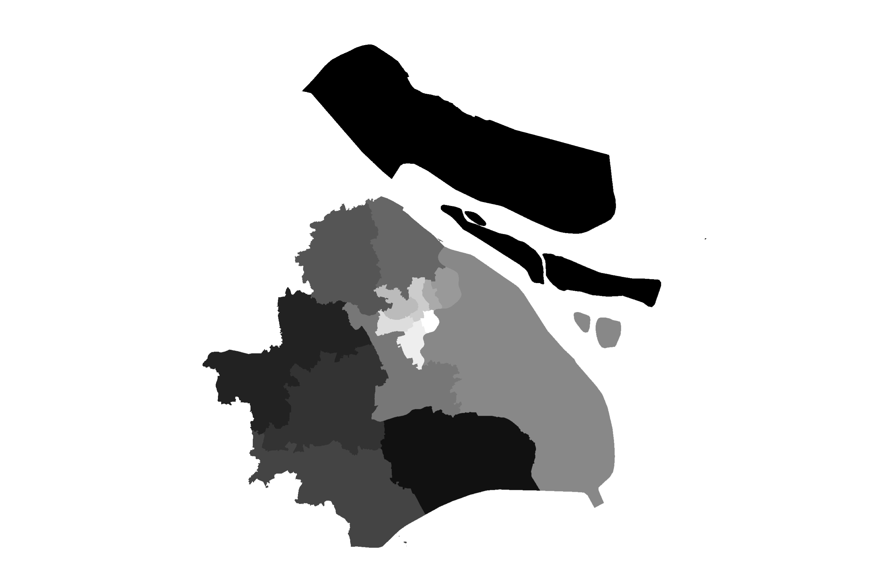
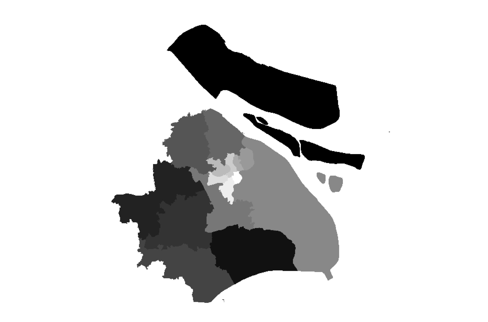

Lab 04 · October 2026
Districts of Shanghai
The question
What's Pudong's area?
The data
The vector layer of districts in Shanghai comes from DataV.GeoAtlas, a boundary service Alibaba publishes at geo.datav.aliyun.com. It is widely used, it is current, and it has the sixteen districts with their correct official codes. However, it carries no licence statement, no accuracy figure and no contact. The points are from a survey conducted during the 2022 Shanghai lockdown. Each point is a location that one (or few) respondents reported where they are during the lockdown. But among the 3,348 results, 553 rows have a (空), which is Chinese for empty. This 553 rows are discarded when converting the CSV to a point layer.
The method
The district boundary file and the survey file were imported into QGIS with a ESPG:4326 - WGS 84 CRS. They were then reprojected to ESPG:32651 - WGS 84 / UTM zone 51N, which is a projected coordinate system that is suitable for Shanghai. The CRS of the project is also set to ESPG:32651. I rerasterized the district boundary layer to a 30m, 100m, 250m and 1,000m resolution raster layer respectively, with the output extent set to 295000, 430000, 3393000, 3528000 [EPSG:32651] and the output data type set to Byte.


What I found
Areas measured planar in EPSG:32651 (WGS 84 / UTM 51N), which departs from the ellipsoidal area by under 0.03 per cent at this latitude. Gridded areas were computed by cell count on a 30 m grid with origin 295000, 3528000; shifting that origin by half a cell moves a small district by several per cent, so gridded figures are reported to no better than the nearest per cent.
The reason for choosing ESPG:32651 (WGS 84 / UTM 51N) is that it provides a smallest area distortion for Shanghai while we are measuring the planar area compared to the geodetic one. As the table shows:
| Frame | Total area, km² | Difference from geodetic |
|---|---|---|
| Geodetic, on the WGS 84 ellipsoid | 7,988.523 | — |
| EPSG 3857, Web Mercator | 10,955.302 | +37.14% |
| EPSG 32651, UTM 51N | 7,986.346 | -0.03% |
| EPSG 4549, CGCS2000 GK CM 120E | 7,992.613 | +0.05% |
| EPSG 4547, CGCS2000 GK CM 114E | 8,089.649 | +1.26% |
While running the rasterization algorithem, the time spent on each resolution doesn't differ much. And the file size it generated is proportional to the number of cells. As the table shows:
| Cell size | Columns × rows | Cells | File size, Byte | Time to burn |
|---|---|---|---|---|
| 1,000 m | 135 × 135 | 18,225 | 18.1KB | 0.14s |
| 250 m | 540 × 540 | 291,600 | 285KB | 0.12s |
| 100 m | 1,350 × 1,350 | 1,822,500 | 1.73MB | 0.13s |
| 30 m | 4,500 × 4,500 | 20,250,000 | 19.3MB | 0.17s |
Now look at each districts' area from the rerasterized layers (we compute it by the number of cells in each district, and multiply it by the cell size). The area of each district is different from the original vector layer, and the difference is larger when the resolution is lower. As the table shows:
| District | Vector, km² | 1 km | 250 m | 100 m | 30 m |
|---|---|---|---|---|---|
| Huangpu | 20.36 | 20.00 | 20.25 | 20.30 | 20.36 |
| Hongkou | 23.41 | 24.00 | 23.38 | 23.48 | 23.40 |
| Jing'an | 36.75 | 38.00 | 36.50 | 36.76 | 36.75 |
| Changning | 37.27 | 37.00 | 37.56 | 37.29 | 37.27 |
| Xuhui | 55.09 | 53.00 | 55.13 | 55.10 | 55.09 |
| Putuo | 55.54 | 53.00 | 55.56 | 55.48 | 55.54 |
| Yangpu | 60.46 | 60.00 | 59.93 | 60.53 | 60.48 |
| Minhang | 372.56 | 377.00 | 372.19 | 372.51 | 372.53 |
| Pudong New Area | 1,696.68 | 1,693.00 | 1,697.38 | 1,696.84 | 1,696.71 |
| Chongming | 2,101.73 | 2,099.00 | 2,100.44 | 2,101.84 | 2,101.70 |
| All sixteen | 7,986.35 | 7,979.00 | 7,984.25 | 7,986.39 | 7,986.31 |
So if I'm supposed to publish an area of Pudong generated from the raster layer. I'll choose the 30m resolution layer, which is the most accurate one. The area of Pudong we get from the vector layer is 1696.68 km², and the area of Pudong we get from the 30m resolution raster layer is 1696.71 km². The difference is only 0.03 km², which is negligible.
Then, the sensitivity check. How will the starting point of the rasterization affect the area of these districts? Take the 1000m resolution case for example. I shifted the range from 295000, 430000, 3393000, 3528000 [EPSG:32651] to 294500, 430500, 3392500, 3528500 [EPSG:32651], which is the same grid shifted by half a cell in both directions. The area difference from the vector layer of different districts before and after the shift is shown in the folowing table:
| District | Vector, km² | Grid A | Grid B | Swing |
|---|---|---|---|---|
| Huangpu | 20.36 | -1.8% | -6.7% | 4.9 points |
| Hongkou | 23.41 | +2.5% | -1.8% | 4.3 points |
| Jing'an | 36.75 | +3.4% | +6.1% | 2.7 points |
| Changning | 37.27 | -0.7% | +4.6% | 5.4 points |
| Xuhui | 55.09 | -3.8% | +5.3% | 9.1 points |
| Putuo | 55.54 | -4.6% | +2.6% | 7.2 points |
| Yangpu | 60.46 | -0.8% | +2.5% | 3.3 points |
| Baoshan | 316.15 | -1.0% | -0.7% | 0.3 points |
What this does not show
8.8% of the survey results have a mismatch between the GPS coordinates and the district the respondent reported. And 16.5% of the survey results don't even have a GPS coordinate.
AI use: AI-assisted for html coding, using Claude Code. I verified it by opening the page on a phone and a laptop and confirming no external resources were added. The measurements, the tables and the interpretations are my own.